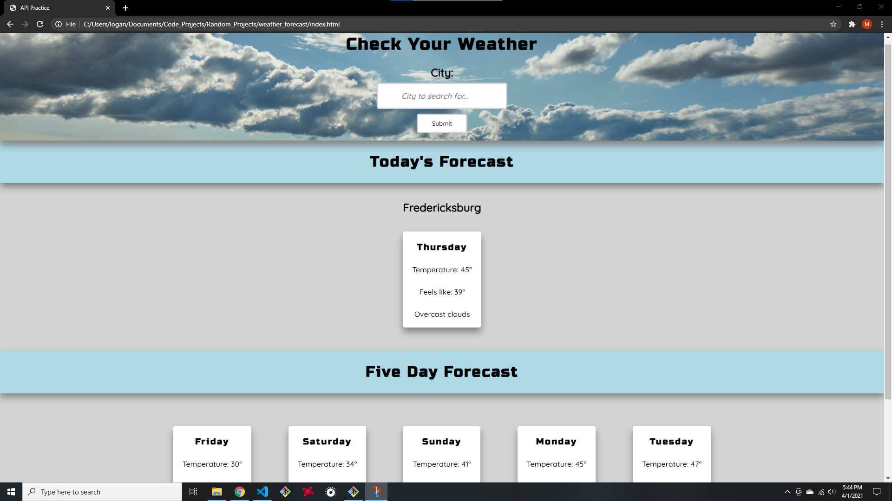

Weather Forecast App
Description
The goal of this web app is to fetch the weather forecast of a specified city for the current day and next five days. This project was created using HTML, CSS and JavaScript and focuses on using the Fetch API with the OpenWeatherData API. The city input is used as the query paramter for API endpoint for the current and five day weather forecast.
View source code
Languages
- HTML
- CSS
- JavaScript
